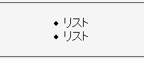

2003-04-27修正。CSS仕様に従った動作です。
2003-04-28修正。誤解を招く表現があったので修正。
ul要素またはol要素をmargin-left, margin-rightの各プロパティでセンタリングし、li要素をtext-alignプロパティでセンタリングしたとき、リストマーカーだけが左端に寄せられたままになる。
<ul style="margin-left:auto; margin-right:auto; width:50%;"> <li style="text-align:center;">リスト</li> <li style="text-align:center;">リスト</li> </ul>
MacIEバグ022のためにmarginプロパティを用いた一括指定でul要素をセンタリングすることはできません。margin-left, margin-rightの各プロパティで個別指定してください。
N7.02での表示（標準モード）
CSS2では、list-style-positionプロパティがoutside値である場合（初期値）、リストマーカーはlist-item要素のボックスの外側に置かれると決められています。従ってリストマーカーがtext-alignプロパティによる配置の影響を受けない状態は、バグではないと考えられます。
リストマーカーもtext-alignプロパティによる配置の影響を受ける実装（WinIEやMozillaなど）については、list-style-positionプロパティが、折り返したlist-item文字列の先頭がリストマーカーの下にくるか否かを設定するものであるという解釈に基づくものであると考えられます（CSS1の規定によればこのように考えることもできそうです）。
MacIE5.0で不具合の発生が確認されています。これはCSS仕様に従った動作です。